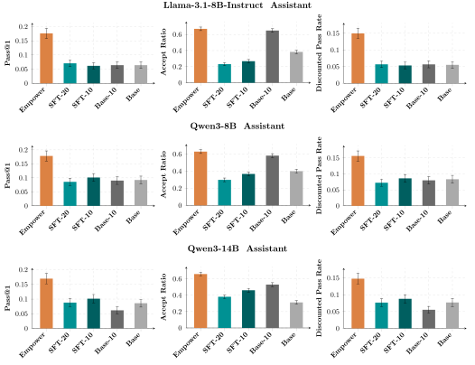
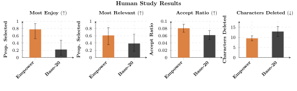

Abstract
A truly helpful assistive agent should not only take actions on behalf of a human, but also step out of the way and cede control when there are important decisions to be made. However, current methods for building assistive agents, whether via mimicking expert humans or via RL finetuning on an inferred reward, often encourage agents to complete tasks on their own rather than truly assisting the human attain their objectives. Additionally, these methods often require costly explicit human feedback to provide a training signal. We propose a new approach to tuning assistive language models based on maximizing the human's empowerment, their ability to effect desired changes in the environment. Our empowerment-maximizing method only requires offline text data, providing an unsupervised method for fine-tuning language models to better assist humans. To study the efficacy of our approach, we conducted an 18-person user study comparing our empowerment assistant with a strong baseline. Participants preferred our assistant 78% of the time (p = 0.015), with a 31% higher acceptance rate and 38% fewer suggestions. Additionally, we introduce a new environment for evaluating multi-turn code assistance using simulated humans. Using this environment, we show that agents trained with empowerment increase the success rate of a simulated human programmer on challenging coding questions by an average of 192% over an SFT baseline. With this empowerment objective, we provide a framework for useful aligned AI agents at scale using only offline data without the need for any additional human feedback or verifiable rewards.
Our Algorithm: Empower
When the human writes boilerplate code, they have a low empowerment because their actions are easily predicted, so they carry little information about the future. To empower the human, an assistant should be trained to complete this predictable text so that the human doesn't have to. Our insight is that we can use an LLM, $\hat{\pi}$, to estimate how likely a completion is. We therefore propose the following algorithm to choose completions to train our assistant on:
$$i^* = \arg \max_i \{i: -\log \hat{\pi}(\ell_{t+1:t+i} \mid \ell_{1: t}) < \eta\}.$$
This optimization chooses the largest completion length, $i$, such that the negative log likelihood of that completion as judged by an LLM is below a threshold $\eta$ which we choose. This can equivalently be viewed as choosing the longest completion length, $i$, where the cumulative likelihood of the completion is greater than $2^{-\eta}$. We write the optimization with a negative log likelihood to highlight that it is a one-sample estimate of the entropy.
During training, we first sample a program from an offline dataset, then sample a prefix to that program which becomes the state $\ell_{1:t}$. Any suffix is a possible completion. We train on the suffix $\ell_{t+1:t+i^*}$ chosen by the above optimization. Intuitively, we are training the assistant on obvious completions -- those that the LLM thinks are likely -- thereby leaving the human to write more impactful text in the future.
Mathematical connections with effective empowerment
Under some assumptions, our algorithm can be viewed as training the assistant to suggest text that would have a low empowerment for the human to write. We use the effective empowerment objective, which provides a computationally-tractable alternative to the canonical empowerment objective.
$$\emp(\pih, \ell_{1:t}) \triangleq I(\ell_{t+1}^{\human}; \ell^+ \mid \ell_{1:t}).$$
We can upper-bound the empowerment with an entropy:$$\emp(\pih, \ell_{1:t}) \leq H(\ell_{t+1}^{\human} \mid \ell_{1:t}).$$
If we can estimate $H(\ell_{t+1}^{\human} \mid \ell_{1:t})$, we can estimate an upper bound on the empowerment. We assume that a pre-trained LLM, $\hat{\pi}$, is a reasonable estimator of the entropy of the human's next action. We can then take a one-sample Monte Carlo estimate of the entropy:$$H(\ell_{t+1}^{\human} \mid \ell_{1:t}) \approx -\log \hat{\pi}(\ell_{t+1}^{\human} \mid \ell_{1:t}).$$
Our estimated upper bound on the empowerment becomes:$$\emp(\pih, \ell_{1:t}) \lessapprox -\log \hat{\pi}(\ell_{t+1}^{\human} \mid \ell_{1:t}).$$
While this is a rough approximation of the entropy, it works well in practice for the purpose of choosing empowering completions, and is simple to implement. Under these assumptions, the algorithm described above can be seen as training an assistant to complete text which is predictable, and therefore would not be empowering for the human to write.
Experiment Setup
Our experiments apply our empowerment objective to the task of code generation. The environment is similar to GitHub Copilot, where an assistant proposes a completion which the human can accept or reject. We train all models using a dataset of 4,138 unique questions from Codeforces, each of which is paired with one attempted solution by Gemma-3-27B-it. We use Llama-3.1-8B-Instruct, Qwen3-8B, and Qwen3-14B as assistant models. For the simulated setting, we use Gemma-3-27B-it as the human model. The prompts we use are provided in Appendix D.
We compare against both trained and untrained baselines, which are detailed in Section 5.1 of the paper. Our method, Empower, is trained on completions returned from the algorithm described above. We use the untrained base assistant model as our likelihood estimator, $\hat{\pi}$.
Simulated Results
We evaluate the empowerment assistant with a simulated human on LiveCodeBench problems. We find that Empower outperforms all baselines on pass@1, accept ratio, and discounted pass rate (DPR). Full details are provided in Section 5.2 of the paper.
Human Study Results
We conducted an 18-person double-blinded user study. Participants ranked the Empower assistant as the one they would more enjoy using in practice 78% of the time ($p = 0.015$). The Empower assistant had an acceptance rate of 8.08% compared to the 6.18% of the Base-20 assistant ($p=0.0002$). Full details are provided in Section 5.3 of the paper.
These differences highlight the type of assistance that empowerment enables. Rather than making decisions for the human, our empowerment objective trains an assistant that completes the obvious and no more. This leads to a more natural interaction, and reduces the feeling of frustration that comes from an assistant completing too much.
Example Interactions
Empower
Base-20
These videos show the Empower assistant and the Base-20 assistant helping a user solve the Lava problem (included in Appendix E.2. of the paper). The Empower assistant provides fewer suggestions, but the ones it does provide are more helpful. The user tends to delete more text from the Base-20 assistant's suggestions, which often make incorrect assumptions about the user's intent.